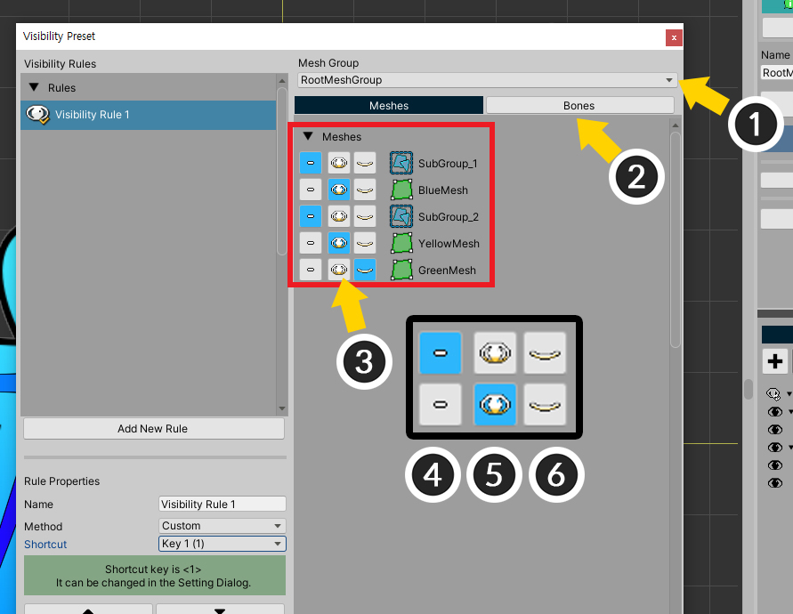
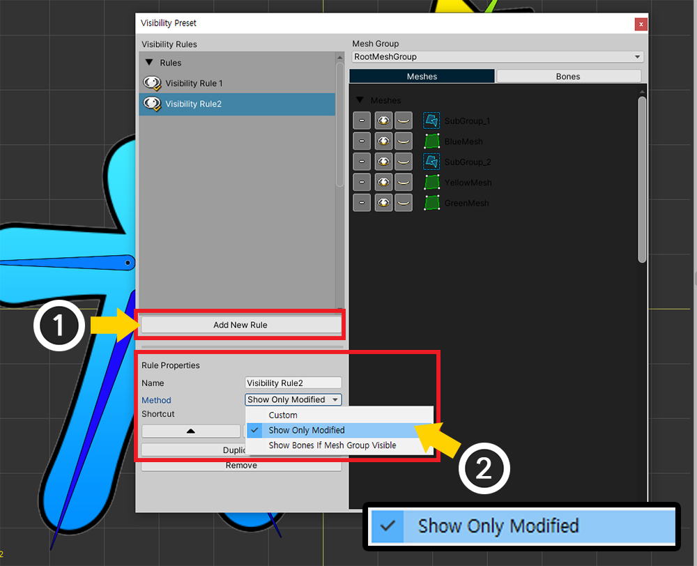

AnyPortrait > Manual > Visibility Preset
Visibility Preset
1.3.0
When there are many objects while creating animation, it is difficult to do efficient work.
So users need to hide or show some objects while working on them.
If you do this repeatedly, it will be convenient to use it after saving whether objects are shown or not.
This page explains the Visibility Preset, which improves the efficiency of your work.

We have set up a simple character for explanation.
This is a sample of two child mesh groups in one mesh group.
Each child mesh group has meshes and bones.
If you want to hide objects you don't need,
(1) Click the black or green eye icon on the right Hierarchy screen.
(2) Objects are temporarily hidden.
This method is easy and convenient, but it's a bit cumbersome to do it over and over again.
Let's use Visibility Preset.

(1) Open the View Menu.
(2) Select Visibility Preset > Settings.

This is the Visibility Preset Setting screen.
1. Rule List : Rules of the Visibility preset are displayed.
2. Add New Rule : Create a new rule.
3. Rule properties : These are properties of the selected rule.
4. Order, Duplicate, Remove : These are functions to change the order in the list, duplicate and remove the rule.
5. Mesh Group : This is the target mesh group.
6. Object list : In case of Custom rule, it is a screen to decide whether to display objects.
Create a new rule

Let's add a new rule.
(1) Click the Add New Rule button.
(2) A new rule has been created. Select the created rule.
(3) Set the name of the rule.
(4) Let's select Custom as the rule method.

(5) You can assign shortcuts if necessary. You can select one of 5 shortcuts ( 1~5 ).

In the "Custom" type rule, you can directly set whether to display objects.
(1) Select the target mesh group.
(2) Select the Meshes tab to set whether to display meshes and child mesh groups.
(3) It sets whether to display objects.
(4) Visibility of object, which is calculated by modifiers is maintained as it is.
(5) Make the object be shown.
(6) Make the object be hidden.

You can also set whether to be visible bones by clicking the Bones tab.

Now let's apply this visibility preset rule.
(1) Open the View Menu.
(2) Press Visibility Preset > Enable Preset (shortcut key I ) to activate view preset.
(3) The created rules are displayed in the View menu. You can change the rules.

You can see that the visibility preset rule you created has been applied.
In the Hierarchy on the right, a "white eye icon" indicates that the visibility is changed or not.
Make only the modifier's target visible
If you want to make only the objects you are editing visible in the workspace, and hide other objects, let's use a special rule method.

This is a screen made to move only the bones of the right child group among the child mesh groups.
Only the bones on the right are registered in the modifier, and other objects are not registered in the modifier.
Let's make only the right bones being edited be visible.

Opens the Visibility Preset Settings screen.
(1) Click the Add New Rule button to create a new rule.
(2) Set the name, and this time, set the Method as Show Only Modified.
In this method, the visibility of the object is determined according to the modifier, so the screen on the right where you manually set whether to display objects is deactivated.

(1) Open the View menu and select Second Rule. Selecting a rule automatically activates the visibility preset.
(If the visibility preset is not activated, press Enable Preset.)

You can see only the bones currently being edited in the modifier appear on the screen.
Synchronizing the visibility of bones with the parent mesh group

The bones on the left and right of this sample belong to each child mesh group.

If the child mesh group is not visible by the modifier as above, the meshes will not be rendered together.
However, bones always appear in the workspace regardless of whether the child mesh group is visible or not.
In some cases, these bones do not need to be shown on the screen.

Opens the Visibility Preset Settings screen.
(1) Click the Add New Rule button to create a new rule.
(2) Set the name, and set the Method as Show Bones If Mesh Group Visible.

Let's apply the created visibility preset rule.
Bones are now shown or hidden depending on the visibility of the mesh group.